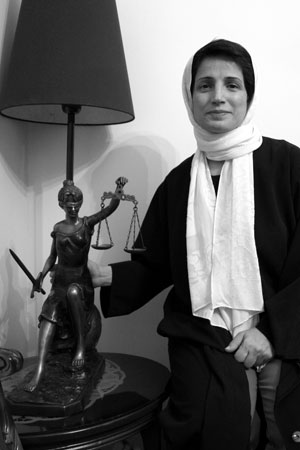
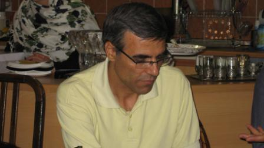
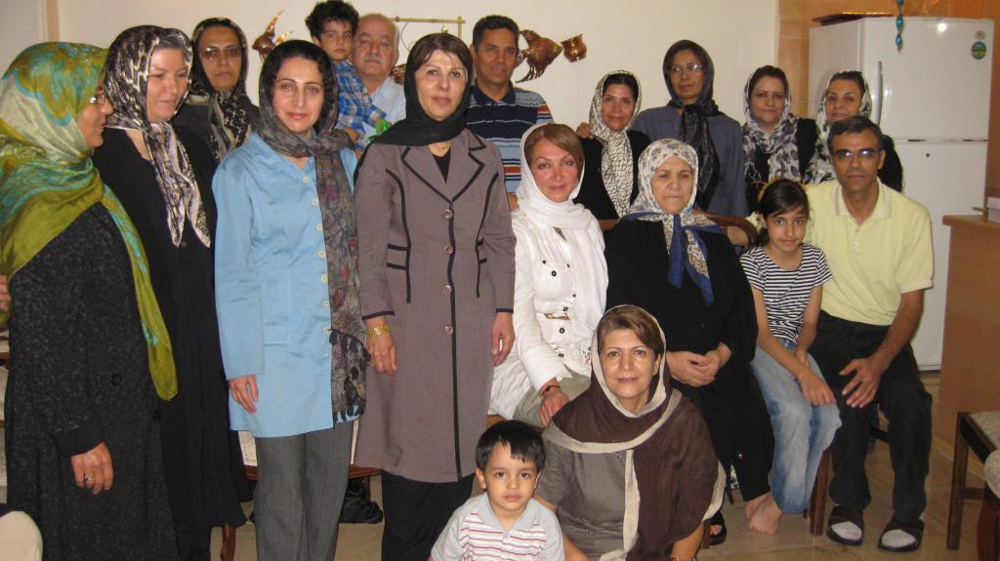

|
|
|
Browsing
Contact Us |
Campaigners |
Face to Face |
Tribune |
Interview |
News |
On the Web |
One Million |
Report
Farsi | Français | German | Italian | Spanish | العربية Also in this section
|
 Interview with Reza Khandan, Nasrin Sotoodeh’s Husband Nasrin Sotoodeh’s Situation in Prison and on Hunger Strike is AlarmingFriday 8 October 2010 Change for Equality: It is National Children’s Day in Iran, but children’s rights continue to be ignored and children’s rights activists are currently in prison. They don’t even have the right to visit with their children or to contact them by phone. Nasrin Sotoodeh, an advocate of children and women’s rights in Iran and a lawyer who had taken up the task of representing many human rights and women’s rights activists is one of these prisoners. We had the chance to speak to Reza Khandan, Nasrin’s husband and to ask him about the latest news on Nasrin.
 What is the latest news on Nasrin Sotoodeh? On October 6, Nasrin had the chance to phone home and talk to me for a few seconds. Our discussion was very alarming. She explained that she has been on hunger strike since September 24, and just as she said they have threatened me…the phone call was cut off and this upset me very much. I had guessed that she was on hunger strike as she had informed me in an earlier telephone conversation that lasted only a few minutes that she had planned to go on hunger strike if she was not allowed to contact her family every four days. Unfortunately officials, do not allow prisoners to take advantage of their most basic rights such as making phone calls and as such she has been forced to go on hunger strike. She is being held in solitary confinement and this is also very alarming. How have you followed up on the situation of your wife and what has been the response of officials? After Nasrin’s phone call, I went to Evin prison and submitted a request to visit with my wife. Thursdays are visiting days at Evin prison. But I was informed that she was banned from having visitors. I have not been able to follow up further because Thursdays and Fridays constitute the weekend here and the courts are closed. I have written letters to officials at the Judiciary, the head of the Task Force on Citizen’s Rights, the Bar Association and the Tehran Prosecutor and I plan to follow up on these letters on Saturday the beginning of the working week in Iran. Were you able to assess the physical and emotional health of Nasrin during the very short conversation you had with her? She sounded week and she seemed very stressed and it seemed as if she was preoccupied. Given what I know of her, I am sure that she has managed to maintain her spirits in prison, but a hunger strike is very dangerous for her. What is bothersome for me is that on October 28, I spoke with the investigative judge in charge of Nasrin’s case and informed him that I was worried that Nasrin may be on hunger strike. The judge said that she was not on hunger strike and that she was in fact doing just fine and then accused us of having planned something in advance. But the fact is that Nasrin went on hunger strike because she was not allowed to call home regularly and to be in touch with her family and especially her children to make sure that they are doing fine. I had explained to the investigative judge that I was concerned about Nasrin’s health that she may suffer health problems like Ms. Nargess Mohammadi. But the judge explained that Nargess Mohammadi had physical ailments prior to her arrest and that there was no need for me to worry. He said all this despite the fact that Nasrin was in fact on hunger strike at the time I spoke to the Judge. Anyhow, I explained to the judge that she was healthy when she was arrested and that I expect that she should be healthy when she is released. How are you children Nima and Mehraveh? The children are very upset. Nima misses his mom and seems very distraught in her absence and Mehraveh is sad and seems depressed, but despite all this she tries to calm Nima. Let’s assume that Nasrin is a criminal and in prison because of she committed a crime. Do criminals not have the right to visits with their family when in detention? Of course, I was nervous that with all that I have to do to follow up on Nasrin’s case, I would not have time to tend to the kids. But fortunately with the help of my mother and our friends we have managed so far. Our friends have been very kind, especially Nasrin’s coworkers and they have not left us alone. These friends and especially Nasrin’s clients are our biggest supporters and they have been extremely kind and supportive throughout this ordeal. Otherwise our children would not be able to make it through these very difficult times. We are very lucky to have these friends with us at this time.
 It should be noted that a group of women’s rights activists, including Campaign activists and Mother’s of Laleh Park (formerly Mourning Mothers) as well as Nasrin’s colleagues and clients visited with her family in honor of the Day of the Child. |